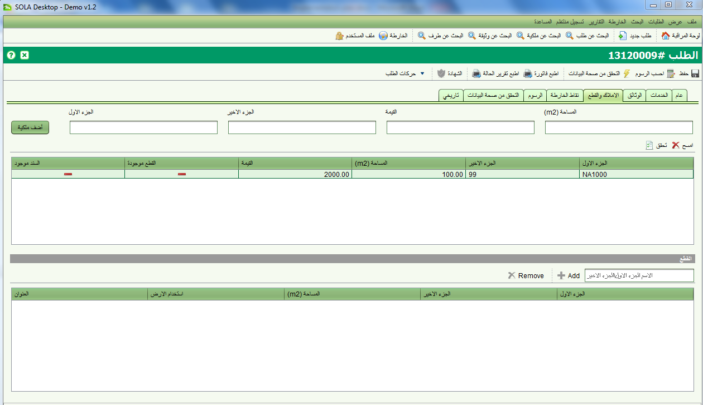

للتحقق من صحة تفاصيل الملكية, اشستخدم صفحة اضافة ملكية جديدة او اختر ملكية موجودة من القائمة ثم اضغط على زر "تحقق"

اذا كان جزئي تعريف الملكية (الجزء الاول والثاني ) مطابقين للوحدة الادارية الاساسة المعرفة في قاعدة بيانات سولا, سوف يتم تعليم الملكية على انها موجودة. اذا كان هناك تعريف جيو-مكاني للملكية , سوف يتم تعريف الملكية بان لها مكان. سوف تساعد هذه المعلومات على التحقق من صحة معلومات الطلب
لاحظ بان سجلات الملكية الجديدة التي تم اضافتها من الشاشة سوف لن يتم اضافتها الى جدول الوحدات الادارية الاساسية لذا فان الملكية الجديدة سوف لن تظهر على انها موجودة اذا تم اضافتها على طلب اخر.
انظر ايضا